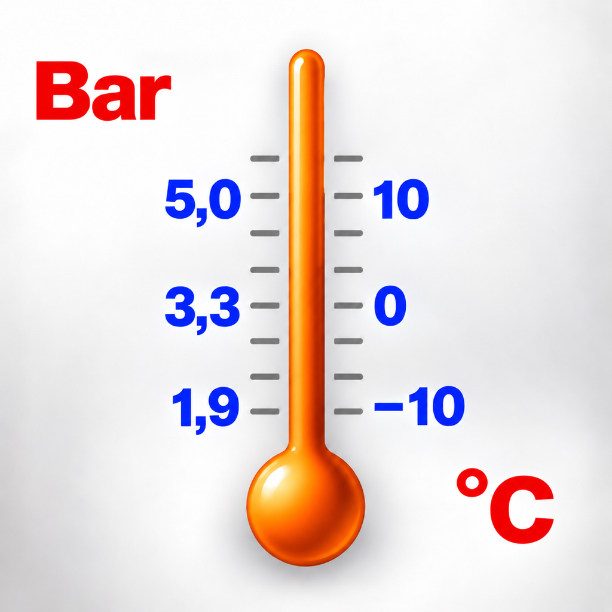

Refrigerant Calculator
Soporte y privacidadCálculos de refrigeración claros.
Calculadora de presión y temperatura, ciclos de una y dos etapas e informes de cálculo en PDF.
En la versión 2.0.0, Otimiz ius admite R717 y localidades brasileñas. La compatibilidad con otras regiones está prevista para una futura actualización.
App Store ↗Soporte
Para consultas o problemas, indique la versión de la app, su dispositivo y los pasos para reproducir la situación. Envíe archivos o capturas solo si lo desea.
caio@movingideas.com.brPolítica de privacidad
2026-10-28 · Refrigerant Calculator 2.0.0
Sin recopilación de datos por la app
Refrigerant Calculator no requiere una cuenta ni envía datos personales, cálculos, historial o favoritos a servidores del desarrollador. Los cálculos se realizan en el dispositivo. No hay servicios integrados de publicidad pagada, seguimiento ni análisis de uso de terceros.
Almacenamiento local
Las preferencias, la configuración, el historial y los favoritos se almacenan en el dispositivo. Pueden incluir fluido, unidades, entradas, resultados y fechas. Permanecen hasta que los elimine en la app o borre sus datos. Las copias de seguridad y restauraciones del sistema operativo pueden incluir estos datos según su configuración.
Informes y enlaces externos
Los informes PDF se generan localmente. Solo se envían a otra app o destinatario cuando decide compartirlos. Los enlaces a la App Store y las referencias externas abren servicios sujetos a sus propias políticas. El Soporte IA está desactivado en esta versión.
Contacto de soporte
Si nos contacta por correo electrónico, su dirección y el contenido enviado se usan para responder a su solicitud. No envíe información sensible innecesaria. Para solicitar la eliminación de mensajes de soporte, contacte con el mismo correo.
Menores y actualizaciones
La app es una herramienta técnica y no recopila datos personales de menores. Los cambios de esta política se publicarán en esta página con la fecha de actualización.